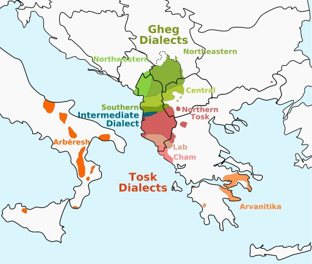

The Albanian Language
Albanian (Gjuha Shqipe) is an Indo-European language spoken by the Albanians in the Balkans and the Albanian diaspora in the Americas, Europe and Oceania. With about 10 million speakers, it comprises an independent branch within the Indo-European languages and is not closely related to any other language.
The two main Albanian dialects, Gheg and Tosk, are primarily distinguished by phonological differences and are mutually intelligible, with Gheg spoken to the north and Tosk spoken to the south of the Shkumbin river. Their characteristics in the treatment of both native words and loanwords indicate the dialectal split occurred after Christianisation of the region (4th century AD) and at the time of the Slavic migration to the Balkans, with the historic boundary between Gheg and Tosk being the Shkumbin which straddled the Jireček line. Standard Albanian is a standardised form of spoken Albanian based on the Tosk dialect. It is the official language of Albania and Kosovo and a co-official language in North Macedonia as well as a minority language of Italy, Montenegro, Romania and Serbia.

Ortography
The Albanian language has been written using many different alphabets since the earliest records from the 14th century. The history of Albanian language orthography is closely related to the cultural orientation and knowledge of certain foreign languages among Albanian writers. The earliest written Albanian records come from the Gheg area in makeshift spellings based on Italian or Greek. Originally, the Tosk dialect was written in the Greek alphabet and the Gheg dialect was written in the Latin script.
Both dialects had also been written in the Ottoman Turkish version of the Arabic script, Cyrillic, and some local alphabets (Elbasan, Vithkuqi, Todhri, Veso Bey, Jan Vellara and others, see original Albanian alphabets). More specifically, the writers from northern Albania and under the influence of the Catholic Church used Latin letters, those in southern Albania and under the influence of the Greek Orthodox church used Greek letters, while others throughout Albania and under the influence of Islam used Arabic letters. There were initial attempts to create an original Albanian alphabet during the 1750–1850 period. These attempts intensified after the League of Prizren and culminated with the Congress of Manastir held by Albanian intellectuals from 14 to 22 November 1908, in Manastir (present day Bitola), which decided on which alphabet to use, and what the standardised spelling would be for standard Albanian. This is how the literary language remains. The alphabet is the Latin alphabet with the addition of the letters ë, ç, and ten digraphs: dh, th, xh, gj, nj, ng, ll, rr, zh and sh.
According to Robert Elsie:
The hundred years between 1750 and 1850 were an age of astounding orthographic diversity in Albania. In this period, the Albanian language was put to writing in at least ten different alphabets – most certainly a record for European languages. ... the diverse forms in which this old Balkan language was recorded, from the earliest documents to the beginning of the twentieth century ... consist of adaptations of the Latin, Greek, Arabic, and Cyrillic alphabets and (what is even more interesting) a number of locally invented writing systems. Most of the latter alphabets have now been forgotten and are unknown, even to the Albanians themselves.